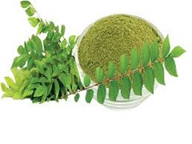

HairCare
For HairFall:
Take some aloevera leaves and take off their pulp with a spoon.
Cut up some onions and crush the pieces to squeeze out the juice.
Mix them up and apply directly to the scalp before showering everyday for a week to see results.
For Dandruff:

Take curry leaves and crush it up in a paste.
Mix it with curd and apply to directly to your scalp and hair.
Keep it for half an hour and then wash it off.
For Hair Growth:
Take curry leaves, fenugreek leaves (i.e. methi) and indian gooseberries (i.e. amla).
Mix them up in a paste and apply on hair.
Keep for some time before washing it off.